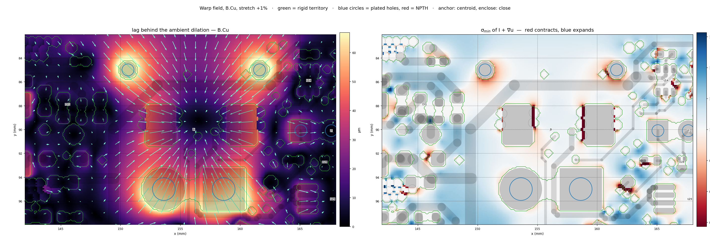
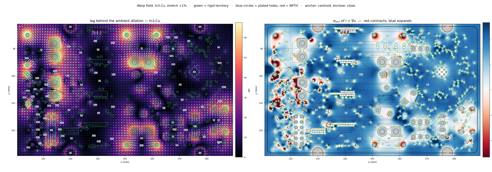

Warping Fields
Interpolate the rigid-inclusion lag through space, not along each net's copper · algorithm A for the rubber stretch · 2026-08-25
check_sync IN SYNC and no airwire regression at any k.1 · The bug was the interpolation domain
Both engines agree on the physics: a footprint is a rigid chip glued to the sheet, so it takes a single translation and its pads therefore trail full dilation by (k−1)·|ρ|, where ρ is each pad's offset from whatever point the part is anchored at. (Which point that should be turns out to matter a great deal — see §4.) That lag has to be blended back into the surrounding copper somewhere, and where is the whole question.
The old engine blended it along the copper graph — the same graph KiCad uses for connectivity. Nothing in that construction knows about distance. A trace pinned to a connector's far pad rides the lagging footprint vector; the trace running beside it, whose own pins are elsewhere on the board, rides near-pure ambient; and the gap between them closes by up to the full lag. Every site in the old census is a different-net pair, every deficit sits in the rigid-lag range, and the site count is nearly flat in k while the depth scales — which is exactly the signature of a fixed set of pairs straddling a residual discontinuity whose magnitude grows with k.
A field that is a function of position cannot do that. Neighbouring copper moves together whatever nets it belongs to, because it is evaluated at neighbouring points of one continuous field.
2 · Watch it happen
The whole top layer, stretched 0 → +10% and back, both engines side by side. Copper is coloured by its lag behind the rubber. On the left, neighbouring traces take unrelated colours and visibly slide past each other — that is the shear. On the right, colour varies smoothly with position: parts still lag, but everything near them lags with them.
ZOOM=cx,cy,width_mm python3 animate.py re-aims it anywhere.3 · The field
hardware/tools/rubber/field.py is a standalone solver — no pcbnew — so it can be reused for the
steerable "add space here" fields later. It solves, on a regular grid,
u(x) = ambient(x) + r(x) · u = vi inside rigid inclusion i · ∇²r = 0 in free space · r → 0 on the domain boundary
with ambient an arbitrary callable (a dilation here, None for a pure push-these-apart
field) and inclusion vectors arbitrary. Four decisions were forced by measurement rather than taste:
- Territories are pads, not courtyards. What must stay rigid is a part's pad geometry; copper merely passing under a courtyard is free to deform, and a trace under a QFN is exactly that. Courtyard territories also make abutting parts fight over the seam cells between them. All pads of one footprint share one vector, so the part stays rigid and the space between its own pads comes out rigid for free.
- Plus what the pads enclose. A morphological closing of each part's own pad set: a trace threading a connector's pin field is held on both sides and can do nothing but move with the part. Without it the field sags toward ambient between the pins while the pins hold, and shears precisely those traces.
- One field per copper layer. Clearance rules live inside a layer, never between them, and this board is six layers. A single 2-D field forces parts on opposite sides that overlap in projection to fight over the same cells — measured here as Y1's pad owned by U16 and U7's by CL1, worth up to 57 µm of bogus shear.
- Vias couple the layers, in two passes. A via barrel is one rigid body piercing the whole stack, so it can only be in one place: it takes the mean of what the layers it spans ask for, and then that displacement is handed back to every layer as a rigid inclusion and the fields re-solved. Without the second pass a via shears against the copper beside it by however much the layers disagreed — which was most of what remained.
Two discretisation passes keep it honest. A straight segment cannot follow a curved field, so each track is subdivided until its chord is within 15 µm of the field (93 tracks split, +142 segments at +1%, worst chord sag 42 µm). That is also what holds tee junctions — the 364 track ends resting on a passing segment's body, which KiCad connects by overlap and not by topology — and same-net pads crossed mid-body, onto their host. And every track end that lands on a pad is pinned to that footprint's vector directly; the field already equals it there, so the two agree to 14 µm, which is the honest measure of how well the territories cover the pads.
Everything that pierces the board is rigid on every layer it pierces, which is not the same as everything that has copper on it: a drill carries its own DRC clearance whether or not it has an annulus, so all 66 holes (6 of them NPTH, with no net and no copper obligation) are pinned on all six layers rather than relying on a pad polygon happening to cover them. Off the copper layers, free silk art is stretched point by point through the field (11 graphics) and silk text moves through it and scales by k (28 texts) — text cannot deform, so scaling is the honest compromise for something that has to stay legible. Footprint silk is untouched: it belongs to a rigid part and already moved with it.
Each of those four decisions was kept because DRC said so, at +1%, cumulatively:
| engine, cumulative | violations | sites | why |
|---|---|---|---|
| graph-harmonic (before) | 465 | 257 | residual interpolated along each net's own copper graph |
| one spatial field, pad territories | 150 | 107 | residual interpolated through space; one 2-D field for the whole stack |
| + one field per copper layer | 53 | 48 | opposite-side parts overlapping in projection stop fighting over cells |
| + via barrels coupled in two passes | 50 | 44 | every layer agrees with the barrel where it pierces |
| + pad-enclosure closing | 47 | 41 | a trace threading a pin field is held by the pins on both sides |
| + anchored at the pad centroid | 37 | 35 | the footprint origin is an arbitrary CAD anchor; the phase connectors carry theirs 5.59 mm off |
4 · What the field map found: mounting holes
Drawing the field over the board is what turned up the next bug, and it was not where it looked. The question was whether NPTH holes and stitching vias were being pinned at all. They were — every one of this board's 66 drilled holes (6 NPTH) is rigid on all six layers and all 617 via barrels are coupled across the stack — and yet the field around the phase connectors' mounting holes was visibly inconsistent, and copper was colliding there.
The cause was the anchor. A rigid part gets one translation to choose, and the engine was using ambient(footprint origin). The footprint origin is an arbitrary CAD anchor, and on this board the phase connectors J1/J2/J9 carry theirs 5.59 mm off their own pad centroid (J12 5.10 mm, J11 3.83 mm; 38 footprints are off by more than 50 µm). Anchoring there dragged every one of those parts' pads — mounting holes included — through an extra 56 µm of lag at +1% for no reason whatever.
The right choice is the least-squares one: the translation minimising Σ|v − ambient(padi)|² over the part's own pads, which for an affine ambient is exactly ambient(pad centroid). That single change took +1% from 47 to 37 violations, and it smooths the field everywhere, not just at connectors: tracks needing a split fell 134 → 93, worst chord sag 46 → 42 µm, F.Cu σmin 0.63 → 0.75.

The map also shows what has not been solved. A connector's four pads remain four rigid islands with a
saddle between them, because the space they span is not part of the connector at all — it is open board with other
parts and live traces in it. Making that span rigid (ENCLOSE=hull) was tried and is worse with the
origin anchor (61 violations against 47, with fresh 70–78 µm sites along the hull boundary) and a wash with the
centroid anchor (38 against 37), so the closing is kept. The residual sag inside those bodies is 29 µm, down
from 43.

fieldmap.py draws the field stretch.py dumped, never a rebuilt one, so the picture
is the field the board actually got.5 · Does the field close anything, anywhere?
The map is F(x) = x + u(x), so a gap between two nearby points survives if and only if the smallest singular value of J = I + ∇u is ≥ 1 — a geometry-only test that does not care what copper happens to be there. It is worth knowing that the construction is non-contracting by design in the clean case: for a single circular rigid inclusion of radius a in a dilation field, the harmonic residual gives exactly
σmin = 1 + (k−1)(1 − a²/r²) ≥ 1 for r ≥ a
with equality on the inclusion boundary — gaps just outside a part are preserved, and everything further out grows. Real footprints are neither circular nor isolated, so the grid map below says how far the board strays from that. Read the percentile, not the minimum: harmonic gradients blow up at the sharp corners of a polygonal pad, so the global minimum is a corner artifact that gets worse as the grid is refined, while the bulk of the board sits just above 1.
| layer | σmin | 1st pct | median | contracting cells |
|---|---|---|---|---|
| F.Cu | 0.751 | 0.9748 | 1.0042 | 19.9% |
| In1.Cu | 0.783 | 0.9878 | 1.0075 | 9.3% |
| In2.Cu | 0.783 | 0.9878 | 1.0075 | 9.3% |
| In3.Cu | 0.783 | 0.9878 | 1.0075 | 9.3% |
| In4.Cu | 0.783 | 0.9878 | 1.0075 | 9.3% |
| B.Cu | 0.748 | 0.9736 | 1.0037 | 22.6% |
Grid 0.12 mm. The median is above 1 on every layer — the board is expanding almost everywhere.
A share of contracting cells is not by itself alarming, because σmin = 0.9999 and
σmin = 0.53 both count. What matters is how deep the dip is and where it sits, so
sigma_probe.py bins it by distance from the nearest rigid territory and converts the depth into what it
would actually cost a 0.2 mm clearance:
| distance from nearest pad | F.Cu | B.Cu | ||||
|---|---|---|---|---|---|---|
| share of contracting | worst σ | worst loss on a 0.2 mm gap | share of contracting | worst σ | worst loss on a 0.2 mm gap | |
| > 0.00 mm | 76.0% | 0.751 | 49.8 µm | 69.9% | 0.748 | 50.4 µm |
| > 0.15 mm | 56.6% | 0.873 | 25.5 µm | 48.2% | 0.863 | 27.3 µm |
| > 0.30 mm | 38.2% | 0.932 | 13.6 µm | 30.3% | 0.917 | 16.5 µm |
| > 0.60 mm | 15.8% | 0.973 | 5.4 µm | 11.2% | 0.970 | 6.0 µm |
| > 1.00 mm | 4.8% | 0.992 | 1.6 µm | 2.7% | 0.986 | 2.8 µm |
| > 2.00 mm | 0.0% | 1.000 | 0.0 µm | 0.0% | 1.000 | 0.0 µm |
Contraction is now, to the cell, a near-territory phenomenon: beyond 2 mm from any rigid shape there is not one contracting cell on either layer, and beyond 1 mm the worst survivor costs 2.8 µm of a 0.2 mm gap while the median costs 0.3 µm. The deep values — 0.75 on B.Cu — sit hard against pad rims, in seams where nothing but those two pads lives and they are moving apart anyway.
This is stricter than it was before the anchor fix, and worth recording as a correction: with the parts anchored at their footprint origins, a tenth to a quarter of the contraction really was out in open routing space, and an earlier draft of this page that called it "all pad rims" was wrong at the time. Moving the anchor to the pad centroid is what emptied the open-space bins.
This is the map earning its keep as an oracle: it predicts a median cost of well under a micron and a worst case of a few tens, and the DRC that follows reports a median deficit of 5 µm and a worst of 14 µm. A proposed field can be judged before it is applied.
6 · Tolerance sweep, head to head
| stretch | graph-harmonic (before) | spatial field (algorithm A) | violations removed | ||||
|---|---|---|---|---|---|---|---|
| violations | sites | worst | violations | sites | worst | ||
| +0.25% | 306 | 173 | 23 µm | 22 | 21 | 3 µm | −93% |
| +0.5% | 374 | 208 | 47 µm | 23 | 22 | 6 µm | −94% |
| +1% | 465 | 257 | 95 µm | 37 | 35 | 14 µm | −92% |
| +2% | 532 | 298 | 159 µm | 46 | 43 | 35 µm | −91% |
| +3% | 612 | 351 | 180 µm | 49 | 44 | 64 µm | −92% |
Both engines measured with the same tool (status.py: DRC, position-independent diff against the
pre-stretch baseline, site clustering), on the same board, at the same k, before any nudging.
check_sync reports IN SYNC in all 10 runs. Algorithm A at +3% is still
cleaner than the old engine at +0.25% — 49 violations against
306 — a twelve-fold larger stretch for
6× less damage. The old engine also opens an
airwire at +3% (55 against a baseline of 54); algorithm A does not
(53).
7 · The staged board
hardware/rp2350_driver_rubber_A.kicad_pcb — +1%, nudged, 30 violations in
24 sites (median 8 µm, p90 21 µm, worst
26 µm), airwires 53 against a baseline of 54,
IN SYNC — board matches schematic. The prior pipeline handed over 92 sites at median
15 µm and worst 121 µm, so this is 3.8× less hand work at
4.7× less worst-case depth. Work it worst-first with python3 hardware/tools/rubber/status.py --board
hardware/rp2350_driver_rubber_A.kicad_pcb.
| µm | position | type | items |
|---|---|---|---|
| 26 | (167.8, 122.6) | clearance | PTH pad 2 [/TXO_INTERBOARD_2] of J8 | Track [/I2C_SCL] on B.Cu, length 2.0750 mm |
| 26 | (153.7, 94.8) | clearance | PTH pad 2 [VMOT] of J9 | Track [C_PWM_H] on In3.Cu, length 1.6694 mm |
| 21 | (151.1, 111.2) | clearance | Track [Vdrive] on In3.Cu, length 0.4345 mm | PTH pad 1 [VMOT] of C39 |
| 20 | (171.3, 92.8) | clearance | Track [A_SENSE] on F.Cu, length 1.7214 mm | Pad 1 [+3V3] of C38 on F.Cu |
| 18 | (170.3, 122.6) | clearance | PTH pad 3 [GND] of J8 | Track [/TXO_INTERBOARD_2] on F.Cu, length 3.3524 mm |
| 17 | (152.8, 111.2) | clearance | Track [Vdrive] on In3.Cu, length 1.7350 mm | PTH pad 1 [VMOT] of C39 |
| 12 | (148.6, 84.3) | clearance | Track [/EXT_ANALOG2] on In3.Cu, length 7.9437 mm | Via [GND] on F.Cu - B.Cu |
| 10 | (173.9, 92.5) | clearance | Track [/H1_SW] on F.Cu, length 0.6086 mm | Track [/H2_SW] on F.Cu, length 0.2146 mm |
| 10 | (173.9, 91.6) | clearance | Track [/H1_SW] on F.Cu, length 0.9080 mm | Track [/H2_SW] on F.Cu, length 0.2146 mm |
| 10 | (171.3, 92.6) | clearance | Track [A_SENSE] on F.Cu, length 1.7214 mm | Pad 2 [GND] of C38 on F.Cu |
| 9 | (187.0, 100.5) | clearance | Pad 5 [GND_ISO] of U16 on B.Cu | Track [+5V_ISO] on B.Cu, length 1.4648 mm |
| 8 | (153.7, 94.8) | clearance | PTH pad 2 [VMOT] of J9 | Track [/E-STOP] on B.Cu, length 2.9515 mm |
| 7 | (165.8, 85.4) | clearance | Track [Vdrive] on B.Cu, length 1.0167 mm | Track [/EXT_ANALOG_SW] on B.Cu, length 1.1471 mm |
| 4 | (165.9, 84.7) | clearance | Track [Vdrive] on B.Cu, length 0.5225 mm | Track [/EXT_ANALOG_SW] on B.Cu, length 1.1471 mm |
| 2 | (123.9, 88.0) | clearance | PTH pad 1 [/A_N] of J1 | Track [/C_P] on B.Cu, length 2.8962 mm |
| 1 | (133.4, 110.6) | clearance | Track [/ENC_A_DATA] on In3.Cu, length 17.0078 mm | Track [/ENC_A_SW] on In3.Cu, length 17.0111 mm |
| 1 | (150.4, 110.6) | clearance | Track [/ENC_A_DATA] on In3.Cu, length 0.4339 mm | Track [/ENC_A_SW] on In3.Cu, length 17.0111 mm |
| 1 | (186.1, 99.3) | clearance | Track [+5V_ISO] on B.Cu, length 0.7164 mm | Pad 6 [/CAN0_N] of U16 on B.Cu |
| 1 | (142.1, 116.3) | clearance | Pad 1 [Vdrive] of U1 on B.Cu | Track [A_PWM_H] on B.Cu, length 2.1361 mm |
| 0 | (151.9, 112.8) | courtyards_overlap | Footprint C39 | Footprint J10 |
| 0 | (158.7, 94.8) | courtyards_overlap | Footprint J9 | Footprint BH1 |
| 0 | (158.7, 94.8) | courtyards_overlap | Footprint J9 | Footprint C80 |
| 0 | (165.2, 122.6) | courtyards_overlap | Footprint J8 | Footprint J5 |
| 0 | (165.3, 89.9) | courtyards_overlap | Footprint J7 | Footprint C38 |
8 · Where this goes
The field solver is deliberately more general than this one use. ambient is any callable and
inclusion vectors are arbitrary, so the same machinery expresses "push these two parts apart and let the copper
between them relax harmonically" with no dilation at all — the shape a steerable add space here operator
needs. The pieces that already exist for that: the σmin map is an admissibility oracle that says whether a
proposed field is legal before DRC runs, and exact linearity in the drive amplitude means a candidate field
is solved once and then scaled to find the largest legal amount. Combining that with jiggling is the next step; the
open question is the same one the creep and module work hit — no
field of any kind reroutes a trace, so the 53 open airwires stay a topological problem.
Tooling: hardware/tools/rubber/field.py (solver),
stretch.py (board application), animate.py (the videos),
render_field_page.py (this page), field_results.json (its data).
The superseded graph-harmonic engine is preserved at git 21f8fce.